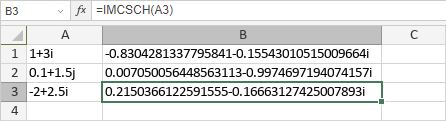

IMCSCH Funkcija
Funkcija IMCSCH je jedna od inženjerskih funkcija. Koristi se za vraćanje hiperboličkog kosekansa kompleksnog broja.
Sinaksa
IMCSCH(inumber)
Funkcija IMCSCH ima sledeći argument:
| Argument | Opis |
|---|---|
| inumber | Kompleksan broj izražen u obliku x + yi ili x + yj. |
Napomene
Kako primeniti funkciju IMCSCH.
Primeri
Slika ispod prikazuje rezultat koji vraća funkcija IMCSCH.
